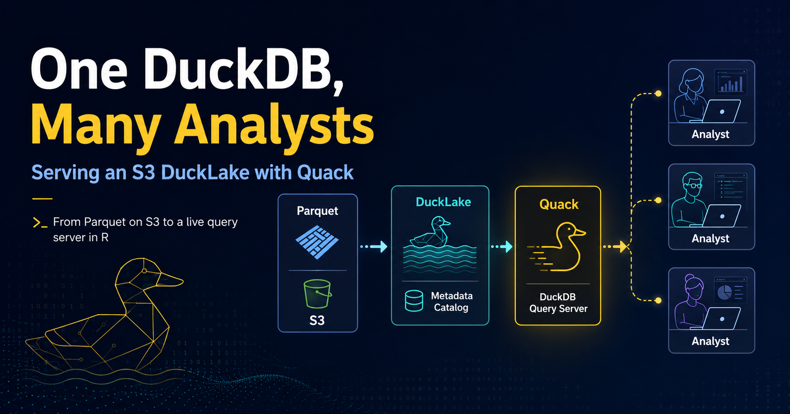

# The status quo for a lot of teams
con <- DBI::dbConnect(duckdb::duckdb())
DBI::dbExecute(con, "CREATE SECRET (TYPE s3, PROVIDER credential_chain)")
DBI::dbGetQuery(con, "
SELECT carrier, AVG(arr_delay)
FROM read_parquet('s3://dsb-flights-lake/legacy/*.parquet')
GROUP BY carrier
")One DuckDB, Many Analysts: Serving an S3 DuckLake with Quack
duckdb
Why sharing a data lake has always been awkward, and how DuckDB’s new Quack protocol changes it. This is a complete walkthrough for from Parquet on S3 to a live server your colleagues can query from R.

Stop Copying Parquet Files Around
DuckDB continues to innovate in meaningful ways and with the recent release of their Quack protocol (including recent headlines that Quack is going LTS as a core capability in DuckDB 2.0, dropping this Fall), I recently got to contribute that protocol support to Travis Gerke’s ducklake package for R users. It’s a tidy-friendly wrapper around DuckLake, DuckDB’s lakehouse format, and as of DuckDB 1.5.3, it can now serve a lake over the network.
Every time I’ve recently explained this to a friend, the same question comes back: “So I convert my Parquet files into a DuckDB and put that on S3?” Not quite, and untangling that is honestly half the value of this post.
So let’s build the whole thing end to end. But first, some groundwork on the problem this actually solves, because Quack only makes sense as an answer to a specific pain.
The Two Axes People Conflate
With that background, here’s the framing that makes the rest of this click. There are two independent questions, and mixing them up is what produces the “convert my Parquet into a DuckDB” confusion.
Where do the bytes live? A DuckLake is not a file format. It’s a catalog - a small database of metadata about tables, snapshots, and which Parquet file holds which rows - plus a data path full of ordinary Parquet files. The data path can be a local directory or s3://your-bucket/prefix. Nothing is ever converted into “a DuckDB.”
Who does the reading? By default, every analyst’s own DuckDB process reaches storage directly and needs credentials to do it. With Quack, one DuckDB instance holds the credentials and everyone else talks to it.
| Without Quack (Level 2) | With Quack | |
|---|---|---|
| What the client connects to | The catalog DB and the Parquet storage | One DuckDB server |
| Storage access each client needs | Read/write on the same data path | None - only the server touches files |
| Extra service to run | A PostgreSQL server (SQLite needs none) | A DuckDB server process |
| Good fit when | Everyone can mount the same storage | Data sits in one place and you want to share access to it |
So: S3 answers “where is the data?” Quack answers “who is allowed to read it, and from where?” You can use either alone. Using both is where it gets interesting.
That second axis is the part I find genuinely useful in a corporate setting. Handing out bucket credentials to fifteen analysts so they can each mount storage is a governance headache with a large surface area. One server that holds the credentials and hands back result sets is a much smaller one.
Enough prose. Let’s try this out.
Setup
Quack needs DuckDB 1.5.3 or newer on both ends. The ducklake package checks this and errors clearly on older engines, but save yourself the trip:
# duckdb 1.5.4+ is on CRAN
install.packages("duckdb")
pak::pak("tgerke/ducklake-r")
library(ducklake)
library(dplyr)
packageVersion("duckdb")
#> [1] '1.5.4'
install_ducklake() # DuckLake extension
install_quack() # Quack extension (core, but pre-install for offline hosts)I’ll use nycflights13::flights as the demo dataset - 336k rows is small enough to run on a laptop and big enough that pulling it across a network to filter it locally is obviously the wrong move.
Step 1: Point the Lake at S3
Here’s the first real gotcha, and it took me a beat to internalize. With the default backend = "duckdb", the catalog is a DuckDB database file, so lake_path has to be local. If you want your Parquet on S3, you need a catalog backend that isn’t a file sitting next to the data - SQLite for a single writer, PostgreSQL for many.
Credentials first. Register them with DuckDB’s secrets manager:
create_storage_secret(
"s3",
provider = "credential_chain", # picks up env vars, profiles, instance metadata
scope = "s3://dsb-flights-lake"
)I’d push hard on provider = "credential_chain" over pasting keys into a script. On an EC2 box or ECS task it resolves the instance role and there is nothing to leak. If you must pass keys explicitly, pull them from the environment and leave persistent = FALSE so they stay in memory:
create_storage_secret(
"s3",
key_id = Sys.getenv("AWS_ACCESS_KEY_ID"),
secret = Sys.getenv("AWS_SECRET_ACCESS_KEY"),
region = "us-west-2",
scope = "s3://dsb-flights-lake"
)Now attach the lake. The SQLite file is the catalog; lake_path is where the Parquet goes:
attach_ducklake(
"flights_lake",
backend = "sqlite",
catalog_connection_string = "~/lakes/flights_catalog.sqlite",
lake_path = "s3://dsb-flights-lake/data/"
)
WarningCatalog and data are separate concerns
The catalog is small, transactional, and the thing that must not be lost - back it up like a database. The S3 prefix is bulk columnar storage. If you’re using PostgreSQL as the catalog backend, note that the postgres and mysql DuckDB extensions don’t build on Windows; SQLite and DuckDB backends do.
Step 2: Get Data In (Two Ways)
If you’re starting from a data frame, create_table() writes Parquet straight to the S3 data path, wrapped in a versioned transaction:
library(nycflights13)
with_transaction(
create_table(flights, "flights_raw"),
author = "Javier Orraca-Deatcu",
commit_message = "Initial load of 2013 NYC flights"
)
with_transaction(
get_ducklake_table("flights_raw") |>
filter(!is.na(arr_delay)) |>
mutate(delayed = arr_delay > 15) |>
create_table("flights_clean"),
author = "Javier Orraca-Deatcu",
commit_message = "Drop cancelled flights, add delay flag"
)If you already have Parquet on S3 - which describes most teams stuck at Level 1 - do not rewrite it. add_data_files() registers files in place, no copy, no re-encode. This is the actual migration path off the status quo:
# Table must exist first with a compatible schema
create_table(
data.frame(
year = integer(), month = integer(), carrier = character(),
arr_delay = numeric()
),
"flights_history"
)
add_data_files(
"flights_history",
c(
"s3://dsb-flights-lake/legacy/flights_2011.parquet",
"s3://dsb-flights-lake/legacy/flights_2012.parquet"
),
ignore_extra_columns = TRUE
)One caveat worth reading twice in the docs: ownership of those files transfers to DuckLake. A later compaction step can rewrite and delete them. Don’t register files that another pipeline still reads directly.
At this point you have a versioned lake with a full audit trail - the thing Level 1 could never give you:
list_table_snapshots()
#> snapshot_id snapshot_time author
#> 1 0 2026-08-08 09:14:02 <NA>
#> 2 1 2026-08-08 09:14:03 Javier Orraca-Deatcu
#> 3 2 2026-08-08 09:14:07 Javier Orraca-DeatcuStep 3: Serve It
Everything so far assumed you have S3 access - that’s Level 2. Now let’s make it so nobody else needs it. From the same session holding the lake:
quack_serve(
uri = "quack:lake.internal.example.org",
token = Sys.getenv("QUACK_TOKEN")
)
#> Quack server listening on "quack:lake.internal.example.org".Two things I appreciate here. The server runs in the background of the DuckDB instance, so your R session stays usable - this isn’t a blocking plumber::pr_run() situation. And the default uri is quack:localhost, which means the safe thing happens if you fat-finger the config: you’ve served it to yourself and nobody else.
The token is the entire access control story, so treat it accordingly. Serving without one raises a warning, and rightly so. On anything other than a trusted internal network, put it behind TLS or a reverse proxy.
Step 4: The Analyst’s Side
This is the payoff. On a laptop with duckdb and ducklake installed and no AWS configuration whatsoever:
library(ducklake)
library(dplyr)
delays <- quack_query(
"quack:lake.internal.example.org",
"SELECT carrier, month,
COUNT(*) AS n,
AVG(arr_delay) AS mean_delay
FROM flights_lake.flights_clean
WHERE delayed
GROUP BY carrier, month",
token = Sys.getenv("QUACK_TOKEN")
)
delays |>
summarise(
worst_month = first(month, order_by = desc(mean_delay)),
.by = carrier
) |>
arrange(carrier)Note flights_lake.flights_clean - the query runs on the server, so tables are addressed by the catalog name the lake was attached under. And note what came back: a summarized data frame, not 336,000 rows. Let the server do the aggregation. That’s the whole point of pushing compute to where the data is.
Because Quack supports concurrent writers, this also works, which surprised me the first time:
quack_query(
"quack:lake.internal.example.org",
"INSERT INTO flights_lake.flights_clean
SELECT * FROM read_parquet('...')",
token = Sys.getenv("QUACK_TOKEN")
)Several analysts can write at once without locking each other out, and every write lands as a snapshot in the same audit trail.
The gotcha that will cost you an hour
If the server is sharing a plain DuckDB database rather than a DuckLake, you get the nicer dbplyr path:
attach_quack("warehouse", "quack:data.example.org", token = Sys.getenv("QUACK_TOKEN"))
get_ducklake_table("warehouse.sales") |>
filter(region == "EMEA") |>
collect()
detach_quack("warehouse")But a served DuckLake is a separate catalog on the server, not part of its default database, so its tables aren’t reachable this way. For a lake, you use quack_query() with the catalog name. I burned real time on this before it clicked, so: attach_quack() for plain databases, quack_query() for lakes.
So When Would I Actually Use This?
Quack is not a replacement for a real warehouse, and the package docs are refreshingly honest about that - for very high write volumes, use a purpose-built database.
Where it fits, in my view:
- Analysts who can’t mount the storage. This is the big one, and it’s the Level 2 constraint. The data sits on one machine or one bucket, and you want a governed door in front of it rather than fifteen sets of credentials.
- A small team on one versioned dataset. Time travel plus author-attributed commit messages is a genuinely nice property for anything that gets audited.
- Alongside a shared catalog, not instead of it. PostgreSQL catalog so the lake supports many writers, Quack in front so people who can’t reach the storage can still connect. That combination is what I keep coming back to.
If everyone on your team can already mount the same bucket, stop at Level 2 - a shared PostgreSQL or SQLite catalog is simpler and there’s no server to babysit.
ImportantQuack is beta
The DuckDB team expects to settle the protocol, function names, and default settings before a stable release in DuckDB 2.0. Pin your versions if this lands in a production pipeline. I’d run it for internal team sharing today; I wouldn’t build a customer-facing dependency on it yet.
Learn More
ducklakeR package by Travis Gerke - the pkgdown site is excellent- Quack Remote Access vignette - the source material for most of this post
- DuckDB Quack documentation - deployment options, TLS, reverse proxies
- DuckLake specification
dplyneage- column-level lineage for dbplyr pipelines, pairs nicely with lake tables
sessionInfo()If you’re sitting at Level 0 or Level 1 with a pile of Parquet in S3 and a team that keeps emailing each other CSVs, this is a genuinely small amount of setup for a big change in how people work. Try it on one dataset first - the medallion pattern in the package docs is a good template.
Happy coding!